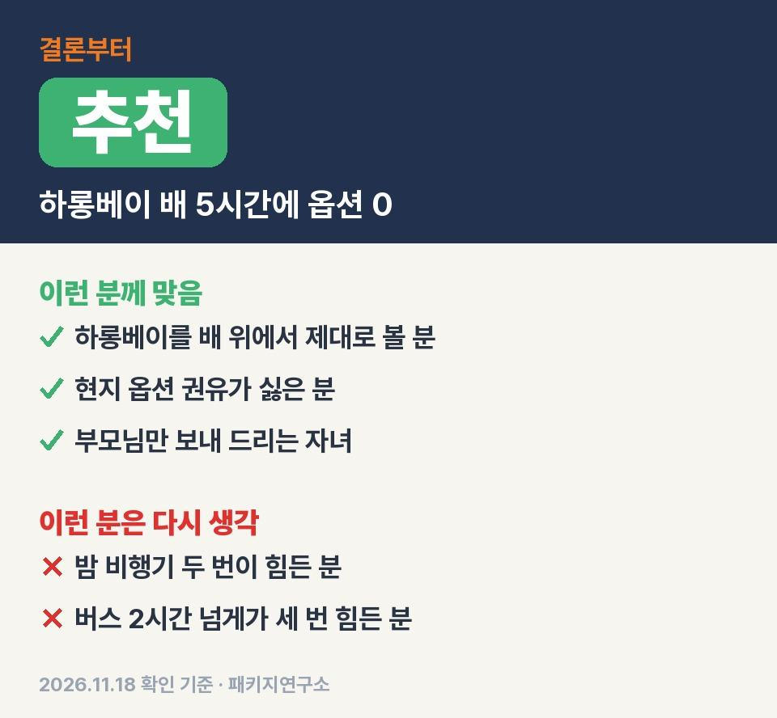
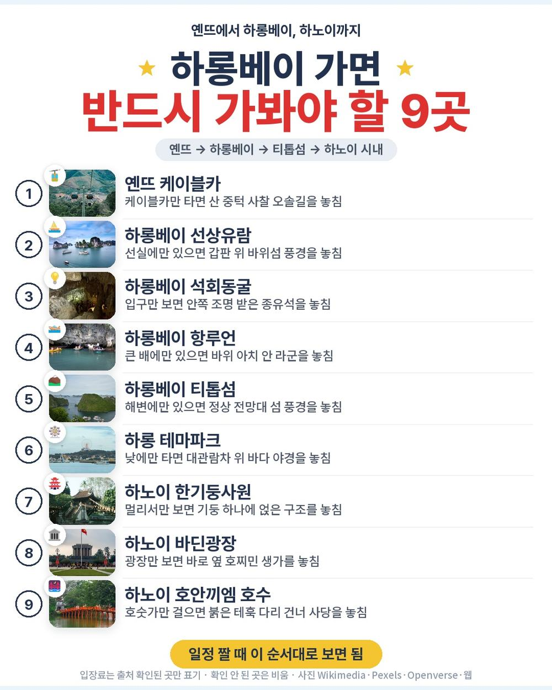
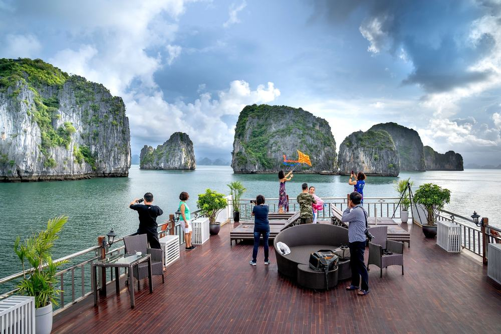
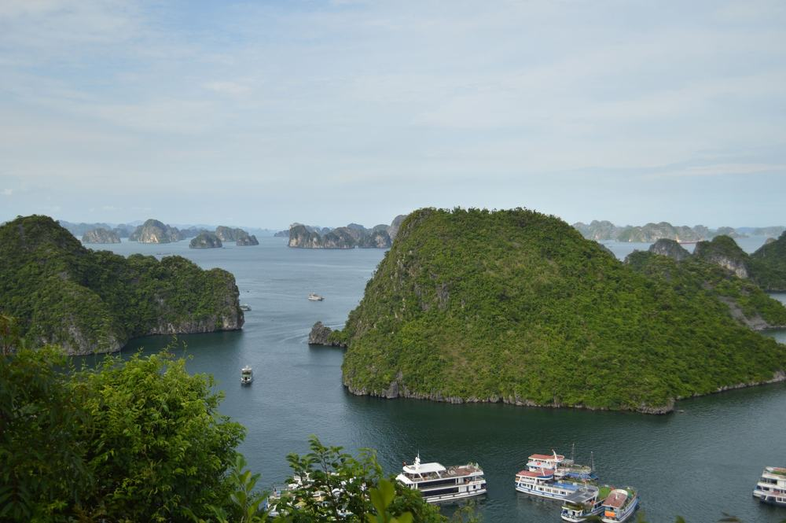
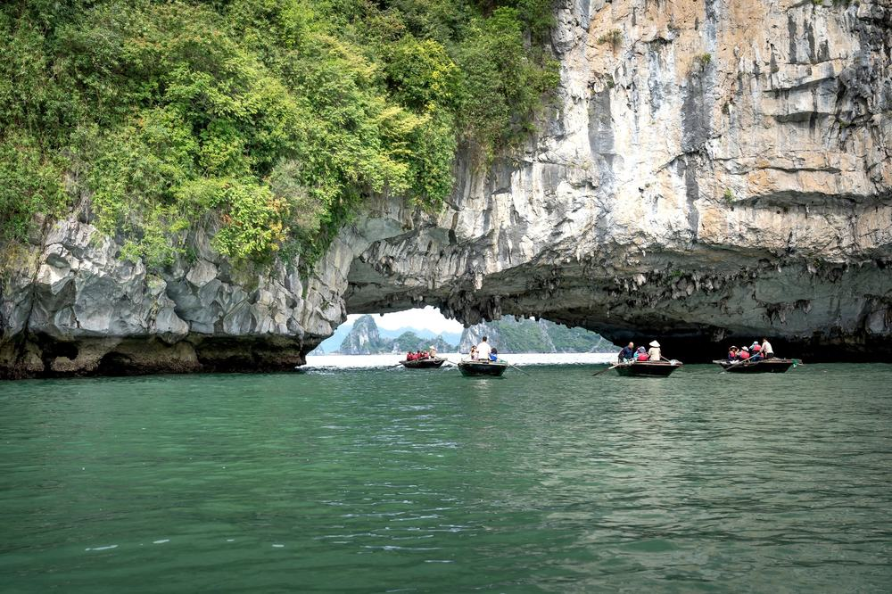

하롱베이 전용 배를 약 5시간 타는 일정에 전신마사지 1시간이 두 번 붙어 있는데 선택관광 칸은 비어 있음.
직접 다녀온 후기가 아니라 일정표와 포함·불포함 원문을 한 줄씩 따져 본 글임.
결론 — 추천. 파라타항공 직항, 호텔 3박, 식사 9번, 하롱베이 선상유람·티톱섬·석회동굴, 마사지 2번이 64만 9천원 안에 있고 선택관광은 0. 다만 밤 비행기 두 번이 힘든 분은 맞지 않음.

오늘 기준 출발일별 요금 보기
https://naver.me/58qBPP9Q

| 항목 | 내용 |
|---|---|
| 가격 | 1인 649,000원 (성인·소아 같음 · 12월 출발 기준) · 2인 1,298,000원 |
| 여행사 | 참좋은여행 |
| 항공 | 파라타항공 직항 (WE271·WE272) · 갈 때 약 4시간 55분 / 올 때 약 4시간 20분 · 기내식 없음 |
| 숙소 | 하노이 1박 + 하롱베이 2박 · 원문 「전일정 5성 월드체인」 · 이름은 출발 2~3일 전 문자 |
| 일정 | 3박 5일 · 식사 9번 · 선택관광 0 · 쇼핑 2곳 · 가이드·기사 경비 1인 50달러 별도 |
▶ 내 출발일 오늘 기준 요금 확인 (제휴 링크 · 예약 시 수수료를 받으며 가격은 같습니다)
▶ 11월 18일 기준 하노이 패키지 최저 44만 9천원부터 — 출발일별 값 한 화면에: 비교 페이지
| 번호 | 내용 | 한 줄 답 |
|---|---|---|
| 1 | 이 값에 들어 있는 것 | 옵션 220달러 상당 |
| 2 | 현장에서 더 낼 돈 | 1인 50달러 |
| 3 | 일정과 체력 | 버스 세 번 |
| 4 | 자유여행으로 짜면 | 항공값 조회 실패 |
| 5 | 맞는 분 · 안 맞는 분 | 3 대 3 |
보통 현지에서 따로 고르는 마사지·스피드보트·테마파크가 처음부터 값 안에 묶여 있음.
- 항공: 파라타항공 인천–하노이 직항 왕복, 유류할증료·TAX 포함
- 숙소: 하노이 1박 + 하롱베이 2박(윈덤 레전드 하롱 또는 동급), 2인 1실
- 식사: 9번 — 호텔 조식 3, 선상 씨푸드 점심, 저녁 한식 1, 꽌안응온 저녁
- 관광: 옌뜨 케이블카, 하롱베이 선상유람 약 5시간, 석회동굴, 티톱섬, 하노이 시내(한기둥사원·바딘광장·호찌민 생가), 36거리 스트리트카, 호안끼엠 호수
- 옵션 포함: 전신마사지 1시간 2번, 스피드보트 비경투어, 2층버스 시티투어, 하롱 테마파크 케이블카+대관람차 — 원문 표기 220달러 상당

여행자보험은 최고 1억원짜리가 들어 있음. 비싼 축은 아닌 값인데 배 타는 시간이 길고 옵션까지 묶여 있어서 이 값이 어디서 나왔나 싶을 정도임.
꼭 내는 돈은 가이드·기사 경비 1인 50달러, 나머지는 매너팁 몇 달러 수준임.
| 항목 | 금액 | 필수/선택 | 비고 |
|---|---|---|---|
| 가이드·기사 경비 | 100달러 (약 13만 3,500원) | 필수 | 1인 50달러 · 1달러 1,335원 계산 |
| 마사지 매너팁 | 18달러 | 원문 표기 | 2일차 4달러 · 4일차 5달러 × 2명 |
| 스피드보트·스트리트카 팁 | 6달러 | 원문 표기 | 2달러 + 1달러 × 2명 |
| 선택관광 | 0원 | — | 노옵션 |
| 합계 (2인 필수분) | 100달러 | 상품가 2인 1,298,000원 별도 |
- 혼자 방을 쓰면 싱글룸 20만원이 붙음
- 쇼핑은 잡화·노니&침향 두 곳, 각 약 60분 — 사지 않아도 됨
- 예약금은 1인 20만원을 먼저 내는 방식임
제일 힘든 날은 버스를 5시간 넘게 타는 2일차고 그날 저녁에 마사지가 붙어 있음.
| 일차 | 가는 곳 | 버스 | 걷기 | 점심 · 저녁 |
|---|---|---|---|---|
| DAY 1 | 인천 → 하노이(밤 도착) → 호텔 | 약 1시간 | 적음 | 없음 · 없음 |
| DAY 2 | 하노이 → 옌뜨 케이블카·사찰 → 하롱베이 → 전신마사지 | 약 5시간 10분 | 많음 | 현지식 · 현지식 |
| DAY 3 | 선상유람 · 석회동굴 · 스피드보트 · 티톱섬 → 2층버스 · 테마파크 | 약 30분 | 많음 | 선상 씨푸드 · 한식 |
| DAY 4 | 쇼핑 → 하노이 → 한기둥사원·바딘광장 → 스트리트카·호안끼엠 → 꽌안응온 → 마사지 | 약 3시간 | 보통 | 현지식 · 꽌안응온 |
| DAY 5 | 하노이 자정 무렵 출발 → 인천 새벽 도착 | — | 적음 | 없음 · 없음 |
- 티톱섬 전망대는 약 400계단, 오를지 말지는 고를 수 있고 아래엔 작은 해변이 있음
- 옌뜨와 하노이 시내는 민소매·짧은 하의면 입장이 막힘
- 날씨가 나쁘면 케이블카·선상유람이 대체 일정으로 바뀔 수 있음

옌뜨는 오르막을 케이블카가 대신해서 걷는 건 사찰 앞 오솔길 정도임. 무릎이 불편한 분은 티톱섬 계단을 건너뛰겠다고 가이드에게 미리 말해 두면 됨.
이 상품 조건 한눈에 (출발일 달력·두 분 값·비슷한 상품과 비교)
https://pkg-lab.com/pkg/APP2457_WE35/?utm_source=ghpages&utm_medium=post&utm_campaign=daily
같은 목적지 다른 여행사 패키지, 쇼핑·선택관광·가이드 경비까지 비교
https://pkg-lab.com/dest/HAN/m/2026-12/?utm_source=ghpages&utm_medium=post&utm_campaign=daily
항공값을 오늘 조회하지 못해 합계는 안 냈고 직접 짜면 따로 챙길 칸만 적음.
| 항목 | 금액 | 근거 |
|---|---|---|
| 인천–하노이 직항 왕복 | 확인 못 함 | 2026-11-18 마이리얼트립 조회 실패 — 숫자를 지어내지 않음 |
| 호텔 3박 | 확인 못 함 | 날짜·호텔마다 다름 |
| 식사 | 따로 | 패키지는 9번 포함 |
| 공항 이동 | 따로 | 패키지는 전용 버스 포함 |
| 하롱베이 배·마사지·테마파크 | 따로 | 패키지는 기본 포함 |
| 여행자보험 | 따로 | 패키지는 최고 1억원 보험 포함 |
| 가이드 | — | 자유여행은 없음 |
- 하노이에서 하롱베이까지 2시간 30분 넘는 길을 차편부터 직접 구해야 함
- 하롱베이 배는 시간·코스가 업체마다 달라서 5시간 코스를 따로 찾는 품이 듦
- 실값은 날짜를 정한 뒤 견줘 보는 게 정확함

걸리는 건 밤 비행기와 버스 세 번이고, 누구에게만 문제인지가 분명함.
| 맞는 분 | 안 맞는 분 |
|---|---|
| 하롱베이를 배 위에서 오래 보고 싶은 분 | 밤 비행기 두 번이 힘든 분 |
| 현지 옵션 권유가 싫은 분 | 버스 2시간 넘게 세 번이 힘든 분 |
| 부모님만 보내 드리는 자녀 | 쇼핑 방문이 아예 싫은 분 |
이 상품 게시판에는 마사지 덕에 쌓인 피로가 풀렸다는 글과 호텔이 깨끗했다는 글이 눈에 띔. 쇼핑 시간이 길게 느껴졌다는 아쉬움도 있어서 그 시간엔 쉬어 간다고 마음먹는 편이 나음.
Q. 하노이 패키지 노옵션이면 현지에서 따로 내는 돈이 없나요?
A. 선택관광은 없음. 다만 가이드·기사 경비 1인 50달러와 마사지·보트 매너팁 몇 달러는 현지에서 냄.
Q. 하노이 패키지 노쇼핑인가요?
A. 아님. 잡화와 노니&침향 두 곳을 각 약 60분 들름. 구매는 자유임.
Q. 하노이 패키지 가격은 이 상품이 얼마인가요?
A. 12월 출발 기준 1인 64만 9천원, 2인 129만 8천원. 출발일마다 값이 달라서 날짜별로 확인해야 함.
배 위 반나절과 마사지 두 번이 이 값의 주인공임.
밤 비행기가 괜찮은 분, 특히 부모님만 하롱베이에 보내 드리려는 자녀에게 잘 맞음.
출발일에 따라 값이 달라서 가시려는 날짜 요금부터 확인하시면 됨.
오늘 기준 출발일별 요금 보기
https://naver.me/58qBPP9Q
이 글에는 네이버 제휴 링크가 포함되어 있으며, 링크를 통해 예약하시면 일정 수수료를 받습니다. 가격은 동일합니다. 가격과 구성은 2026년 11월 18일 확인 기준이며 출발일에 따라 달라질 수 있습니다.
▶ 하노이 패키지 오늘 값 나란히 비교
▶ 같은 목적지 다른 여행사 패키지, 쇼핑·선택관광·가이드 경비까지 비교: pkg-lab.com